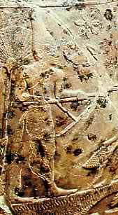

|
|
90 MENES ± 3100 SM
Menes,
Raja cikal bakal dinasti Mesir, adalah penguasa pertama yang
menyatukan seluruh Mesir, dan dengan demikian dia mendirikan
kerajaan yang memegang peranan begitu lama dan begitu
gemerlapan dalam sejarah kebudayaan manusia.
Tanggal lahir Menes dan juga matinya tidak diketahui,
meskipun dianggap sekitar kira-kira 3100 tahun SM. Sebelum
saat itu, Mesir bukanlah suatu negeri tunggal melainkan
terdiri dari dua kerajaan yang terpisah dan berdiri sendiri.
Satu di utara di delta Sungai Nil dan lainnya di selatan, di
lembah Nil. (Karena Sungai Nil mengalir ke laut dalam peta
Mesir purba muara Nil kelihatan di bawah halaman. Atas dasar
alasan ini, orang Mesir menyebut delta di utara sebagai
"Mesir Bawah" sedangkan kerajaan di selatan "Mesir Atas").
Secara umum, Mesir Bawah tampaknya lebih maju dari
tetangganya di bagian selatan. Tetapi Raja Menes-lah,
penguasa Mesir Atas yang berhasil menaklukkan kerajaan di
utara dan menyatukan segenap negeri.
Menes (yang juga terkenal dengan sebutan Narmer) berasal
dari Thinis, sebuah kota di selatan Mesir. Sesudah menguasai
kerajaan sebelah utara dia menjuluki dirinya "Raja utara dan
selatan Mesir," gelar yang dipertahankan oleh para pharao
(fir'aun) berikutnya selama ribuan tahun. Dekat perbatasan
lama antara kedua kerajaan, Menes mendirikan sebuah kota
baru --Memphis-- yang karena letaknya begitu strategis,
menjadi ibukota Mesir yang dipersatukan. Memphis, yang
reruntuhannnya terdapat di dekat kota Kairo sekarang,
berabad-abad menjadi kota terkemuka di Mesir, dan untuk masa
yang cukup lama menjadi ibukotanya.
Sedikit tambahan keterangan tentang Menes telah dapat
diselamatkan. Dia berjasa memegang tampuk kerajaan untuk
masa yang lama --enam puluh dua tahun-- menurut
sumber-sumber kuno, walau ada kemungkinan
dilebih-lebihkan.
Di samping pengetahuan kita yang terbatas tentang
peristiwa-peristiwa yang terjadi begitu lama, hasil karya
Menes tampaknya punya makna penting yang besar sekali.
Sebelum masa dinastinya (yaitu sebelum Menes), kebudayaan
Mesir kurang maju ketimbang kebudayaan Sumeria yang kini
terletak di Irak. Tetapi, penyatuan politik Mesir tampaknya
memancarkan kekuatan laten penduduk Mesir. Memang, benar,
penyatuan diiringi oleh masa kemajuan yang cepat baik di
bidang kultural maupun sosial. Lembaga pemerintahan dan
sosial berkembang pada saat mula periode dinasti, yang
berlangsung dengan sedikit perubahan, 2.000 tahun. Penulisan
hieroglyp berkembang dengan pesat, begitu juga
bangunan-bangunan dan kepandaian teknik lainnya. Dalam
beberapa abad, kebudayaan Mesir sudah menyamai --malah dalam
beberapa sektor melampaui-- kebudayaan Sumeria.
Sesungguhnya, sebagian besar dari masa 2.000 tahun sesudah
Menes, Mesir, diukur dari kekayaan dan kebudayaan, merupakan
negeri termaju di dunia, paling sedikit nomor dua. Ini
adalah bukti suatu kemajuan yang berlangsung lama yang
sedikit kebudayaan bisa menandinginya. Suatu budaya yang
hebat bin hebat.
Memang sulit untuk menempatkan di mana kedudukan Menes
dalam daftar urutan buku ini, berhubung kita tidak punya
data informasi langsung seberapa pentingnya peranan pribadi
Menes dalam hal penaklukan kerajaan sebelah utara dan
penyatuan Mesir. Dengan segala kekurangan informasi itu,
kita cuma bisa menduga-duga berapa besar peranan yang ada
padanya; tetapi tampaknya merupakan dugaan yang aman bahwa
peranan itu amat penting. Secara umum, para fir'aun Mesir
bukanlah tokoh yang terkemuka, tetapi para penguasa yang
memiliki kekuasaan besar. Lebih dari itu, sejarah
memberitahukan kita bahwa kerajaan-kerajaan tak dapat
melakukan penaklukan penting tanpa kepemimpinan seorang raja
yang becus; begitu pula mereka tak mampu mempertahankan
daerah yang sudah ditaklukkan tanpa kepemimpinan seorang
raja yang berkemampuan. Karena itu teramat besarlah
kemungkinan bahwa Menes secara pribadi merupakan faktor
penting dalam peristiwa-peristiwa besar di masanya. Tanpa
mengesampingkan kepicikan pengetahuan kita mengenai Menes,
tampaknya Menes memang salah satu dari tokoh yang
berpengaruh dalam sejarah.
Situs Web
- http://www.ancient-egypt.org/history/01_03/01.html
|